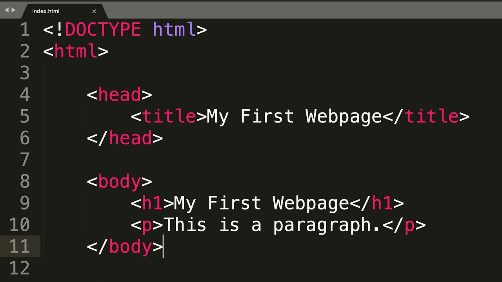

I first learned how to program in Grade 11 when I started using HTML. I started experimenting with simple tags for text, images, links and layouts to build web pages. It took some time to get used to how things work, but gradually I gained more confidence in creating basic web pages. It taught me how to troubleshoot issues and how websites work. It also introduced me to the world of web development and inspired me to further my learning in programming in college.